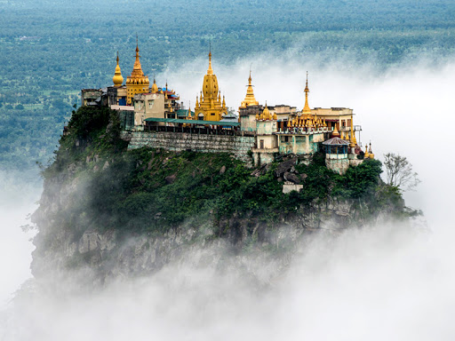
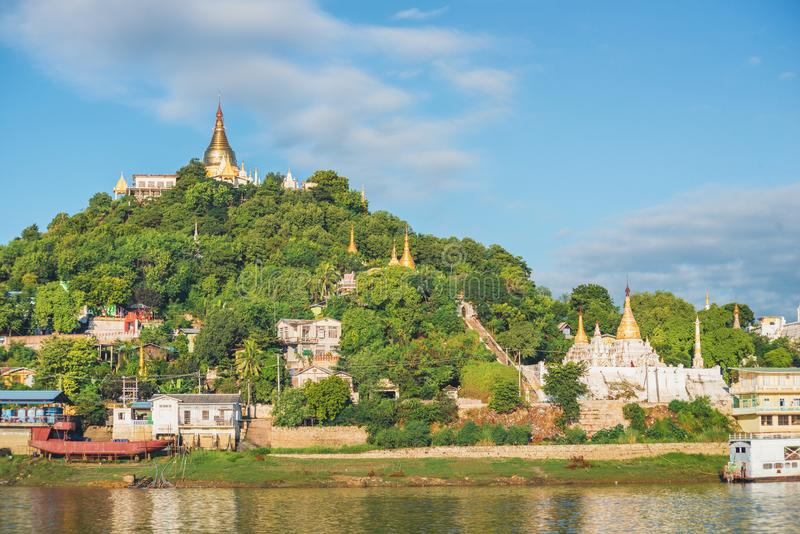
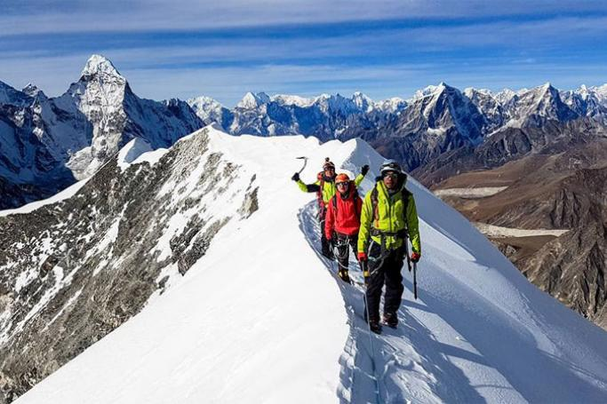

Mandalay Hill is known for its abundance of pagodas and monasteries, and has been a major pilgrimage site for Burmese Buddhists for nearly two centuries. At the top of the hill is the Sutaungpyei (literally wish-fulfilling) Pagoda. A panoramic view of Mandalay from the top of Mandalay Hill alone makes it worthwhile to attempt a climb up its stairways. There are four covered stairways called saungdan leading up the hill from the south, southeast, west and north, and convenient seats of masonry work line these stairways all the way up. A one-way motor road today saves time and also makes it accessible for those who are unable to climb up the stairs, leading to an escalator and a lift to the pagoda at the summit. The dominant natural feature of Mandalay is its 790 ft (240 m) Mandalay Hill, which towers above the city and the flat plain below. Virtually all visitors and pilgrims to Mandalay either climb the 1,729 steps of the covered southern stairway with its magnificent guardian chinthe (half-lion, half-dragon) at the entry, use stairways on the other sides or use easier means and take the escalator, cars or buses to the top.
Book 25,000MMK 5 Hours TripsMount Popa is an amazing place to visit. We went for a day trip from Bagan and stayed for lunch at the Mount Popa resort with a spectacular view of the golden Monastery and the breathtaking landscape ... This was a perfect half day activity. The steps are easy enough to climb and the shops along the way at the bottom distract you a little thus taking attention away from the climb. There are many monke... We stopped for lunch at the Popa Resort restaurant on the hill opposite Mt. Popa. Drove from Mandalay to Bagan 2.5 hours. Wonderful views of the mountain top, great lunch well worth the stop. On to Ba.. We stopped for lunch at the Popa Resort restaurant on the hill opposite Mt. Popa. Drove from Mandalay to Bagan 2.5 hours. Wonderful views of the mountain top, great lunch well worth the stop. On to Bagan another 2hours A must see if you can, quite magical.
7 Hours Trips 50,000MMK Book The tallest of the limestone mountains that ring Hpa-an is Mt Zwegabin, about 7 miles south of town, which as well as being a respectable 2372ft is home to spirits and saintly souls. The two-hour hike to the summit is demanding – up many steps and with monkeys dogging your progress – but once you're at the top the rewards are plentiful. The summit takes in staggering views, a small monastery and a stupa containing a hair of the Buddha's. If you arrive at the top before noon, you can take advantage of a complimentary lunch (rice, orange and tea) and the 11am monkey feeding – different primates, different menus. The descent down the eastern side of the mountain takes around 1½ hours. There has been talk of constructing a cable car, but no work had commenced at research time. You can go to the mountain on a tour from a guesthouse. Alternatively, motorcycle taxis do the return trip for K6000, while a thoun bein (motorised trishaw) is K10,000. The hike starts with a 15-minute walk through a village to the base of the mountain on the western side, past hundreds (1150, to be precise) of identical buddha statues lined up row after row.
Book 70,000MMK 10 Hours TripsSagaing is located just 12 miles from Mandalay and can be reached by crossing the long Sagaing Bridge over the Irrawaddy River. The city is a frequent tourist destination for day trips. Many people who visit Mandalay will also make a trip across the Irrawaddy River to the town of Sagaing. It known as the Centre of Buddhism in Myanmar and it has more than 300 religious buildings. It is a beautiful and peaceful place with lush, tree-covered hills but most tourists only make a quick visit spending 2 or 3 hours exploring two or three main sites. Sagaing was the capital of Sagaing Kingdom (1315-1364), and one of the minor kingdoms that rose up after the fall of Bagan Dynasty. Today, the city is part of Mandalay area with more than 1,022,000 inhabitants (2011 estimate). One of the most popular tourist attractions on Sagaing Hills is Soon U Ponya Shin pagoda. It is connected by a set of covered staircase that runs up the 240 meters hill and is one of the oldest temples on Sagaing Hills. It was built in 1312 by Minister Pon Nya. A Pagoda Festival is held on Full Moon Day of Warso, the fourth month of Myanmar Calendar, which falls in July of each year.
3 Hours Trips 5,000MMK Book Staring distantly towards Mandalay Palace, temple-topped Yankin Hill is worth climbing for views of greater Mandalay's rice-field setting and of the Shan foothills behind. After a 10-minute climb along the obvious covered stairway, you're likely to encounter a couple of domesticated stags – feeding them supposedly brings Buddhist merit. Pagoda walkways turn south along the ridgetop, eventually ducking into a rocky cleft where devotees splash water on tacky golden fish statues that lie at the feet of a Buddha image. Cars and motorbikes can drive almost to the top of the hill from the southeast. Some pick-up 5 (၅) services terminate near the 19th St stairway. Around 300yd back towards Mandalay, then 300yd north, Mya Kyauk monastery has a dazzlingly distinctive brassy stupa and is famed for its water. A taxi out this way will cost around K5000 return (or around K3000 for a motorcycle taxi).
Book 25,000MMK 5 Hours Trips“They maintain the routes from the base camp to the summit, have lots of porters and it’s easy to find people by air if they’re missing. That’s not the case on Hkakabo Razi.” The first known attempt to scale the mountain was by British explorer and botanist Frank Kingdon-Ward in 1936. In his book “Burma’s Icy Mountains”, he describes how the peak “utterly defeated” him, forcing him to turn back a vertical kilometre below the top. It took another 60 years before Japanese mountaineer Takashi Ozaki and his Myanmar climbing partner Nyima Gyaltsen prevailed on their third attempt. Ozaki, the first-ever climber to successfully tackle Mount Everest’s north face, reportedly described the peak as “one of the most difficult and dangerous mountains in the world”. Two separate expeditions in 2014 both met with costly failure. One local Myanmar team never returned, a tragedy magnified when a rescue helicopter crashed, killing one pilot.
1 Months Trips 5000,000MMK Book  Copyright @AnyGo Travel and Tours
2020 All Rights Reserved